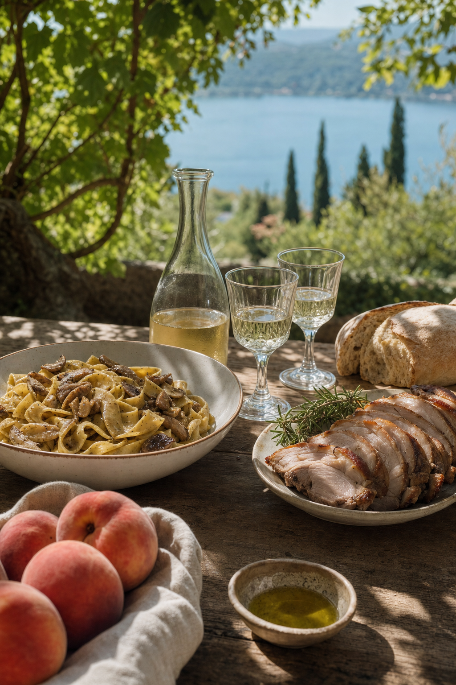
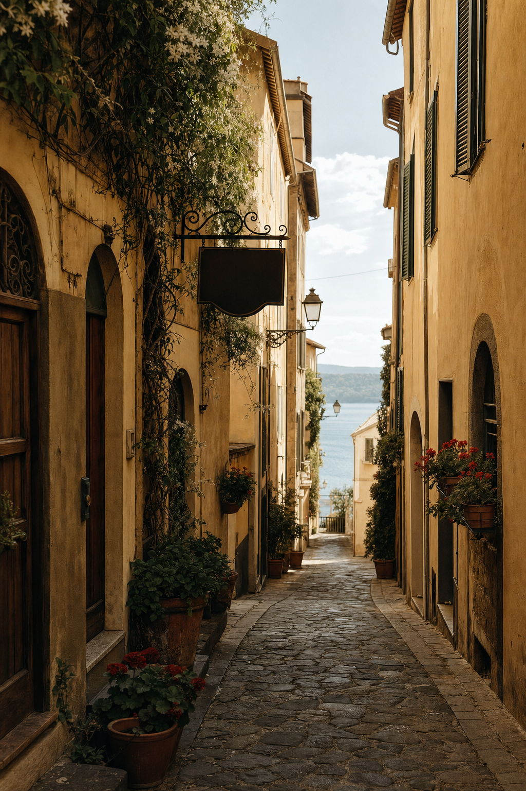

Le pesche di Castel Gandolfo — novanta anni di sagra.
Il 26 luglio 2026 si è chiusa la 90ª edizione della Sagra delle Pesche di Castel Gandolfo. Una tradizione ininterrotta dal 1934, che racconta come un frutto abbia dato nome, identità e mercato a un borgo di duemila anime.

Perché le pesche crescono qui
Le pendici del cratere del Lago Albano sono un microclima naturale per la coltura della pesca. La terra è di origine vulcanica, ricca di potassio e minerali; l'esposizione a mezzogiorno è quasi sempre libera; il lago mitiga gli sbalzi termici notturni. Le prime coltivazioni documentate risalgono all'Ottocento, ma è nel primo Novecento che i piccoli proprietari delle colline attorno a Castel Gandolfo iniziano a specializzarsi in questa produzione.
La varietà più tipica è la Pesca di Castel Gandolfo, gialla a pasta soda, con buccia lievemente vellutata e una lieve venatura rossa. Le pesche nettarine sono coltivate in appezzamenti separati, principalmente sulle terrazze verso Marino. La raccolta va da metà giugno a fine agosto, con il picco a luglio — motivo per cui la sagra si tiene sempre nell'ultima settimana del mese.
La Sagra — dal 1934
La prima edizione della Sagra delle Pesche fu organizzata nel 1934 dalla Pro Loco cittadina come vetrina delle produzioni locali durante la villeggiatura papale di Pio XI. La sagra sopravvisse alla guerra, si interruppe solo tra il 1943 e il 1946, e riprese poi ininterrottamente. Nel 2026 ha celebrato la sua 90ª edizione, dal 20 al 26 luglio, con un programma che ha unito tradizione e novità ([Comune di Castel Gandolfo](https://comune.castelgandolfo.rm.it/it/news/al-via-la-90a-sagra-delle-pesche-2026-dal-20-al-26-luglio-castel-gandolfo-si-veste-a-festa)).
Il programma tipico comprende: degustazioni di pesche fresche e prodotti derivati (marmellate, gelati, liquori, torte), mercatini artigianali lungo Corso della Repubblica, rievocazione storica in costume del corteo con la benedizione delle pesche in Piazza della Libertà, spettacoli musicali serali con band locali e ospiti nazionali, e la domenica finale con il carro allegorico e la distribuzione gratuita di pesche in piazza.

Pesche al vino di Frascati.
La ricetta tradizionale di fine estate: pesche gialle mature, tagliate a spicchi, macerate per due-tre ore in vino bianco fermo di Frascati con un cucchiaio di zucchero e la scorza di limone non trattato. Si servono ben fredde, in coppe di vetro, con una foglia di menta. È il dessert di ogni pranzo della sagra e delle domeniche d'estate nelle famiglie del borgo.
Dove comprare le pesche
Da giugno a fine agosto, i banchi dei coltivatori locali si allineano ai piedi del borgo lungo la Via dei Laghi e a Corso della Repubblica. I prezzi al chilo variano da 2,50 a 4 euro per la varietà comune, fino a 6 euro per le nettarine più pregiate. Diverse aziende agricole della zona vendono direttamente in campagna, con la possibilità di raccogliere il proprio cesto — verificare l'apertura sui social delle singole aziende.
La pesca di Castel Gandolfo non è al momento un marchio DOP né IGP, ma la Regione Lazio ha inserito la varietà nell'elenco dei Prodotti Agroalimentari Tradizionali del proprio territorio. Alcuni produttori aderiscono al circuito Presìdi Slow Food dei Castelli Romani.
Tre indirizzi per assaggiarle
I ristoranti tipici del borgo servono in stagione dolci e granite di pesca; le pasticcerie locali preparano crostate, semifreddi e la classica torta ricotta e pesche. I gelati artigianali con pesche del posto sono una delle poche esperienze davvero locali che si possono ancora provare senza ritocchi turistici.
Vieni alla prossima sagra.
La 91ª edizione è prevista nella terza settimana di luglio 2027. Scopri il calendario eventi e prenota per tempo un alloggio nel borgo.